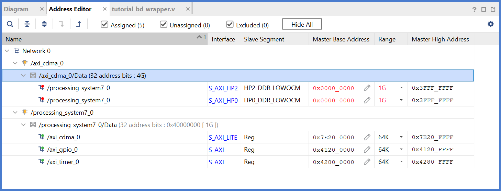
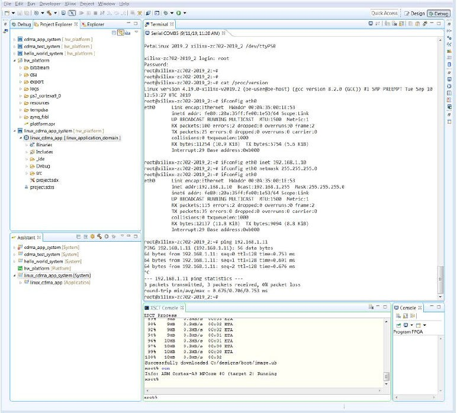
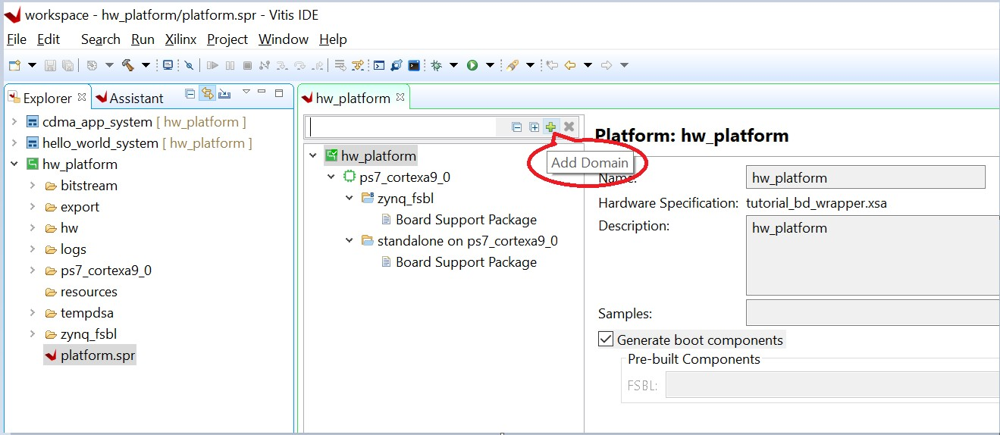

Read this page in other languages:日本語
Zynq-7000 SoC Embedded Design Tutorial 2020.2 (UG1165) | |||||
|---|---|---|---|---|---|
| 1. Introduction | 2. Using the Zynq SoC Processing System | 3. Using the GP Port in Zynq Devices | |||
| 4. Debugging with the Vitis Software Platform | 5. Using the HP Slave Port with AXI CDMA IP | 6. Linux Booting and Debug in the Vitis Software Platform | |||
| 7. Creating Custom IP and Device Driver for Linux | 8. Software Profiling Using the Vitis Software Platform | 9. Linux Aware Debugging | |||
Using the HP Slave Port with AXI CDMA IP¶
In this chapter, you will instantiate AXI CDMA IP in fabric and integrate it with the processing system high performance (HP) 64-bit slave port. In this system, AXI CDMA acts as master device to copy an array of the data from the source buffer location to the destination buffer location in DDR system memory. The AXI CDMA uses the processing system HP slave port to get read/ write access of DDR system memory.
You will write standalone application software and Linux OS based application software using mmap() for the data transfer using AXI CDMA block. You will also execute both standalone and Linux-based application software separately on the ZC702 board.
Integrating AXI CDMA with the Zynq SoC PS HP Slave Port¶
Xilinx® Zynq®-7000 SoC devices internally provide four high performance (HP) AXI slave interface ports that connect the programmable logic (PL) to asynchronous FIFO interface (AFI) blocks in the processing system (PS). The HP Ports enable a high throughput data path between AXI masters in programmable logic and the processing system’s memory system (DDR and on- chip memory). HP slave ports are configurable to 64 bit or 32 bit interfaces.
In this section, you will create a design using AXI CDMA intellectual property (IP) as master in fabric and integrate it with the PS HP 64 bit slave port. The block diagram for the system is as shown in the following figure.

This system covers the following connections:
AXI CDMA Slave Port is connected to the PS General Purpose master port 1 (M_AXI_GP1). It is used by the PS CPU to configure the AXI CDMA register set for the data transfer and also to check the status.
AXI CDMA Master Port is connected to the PS High performance Slave Port 0 (S_AXI_HP0). It is used by the AXI CDMA to read from the DDR system memory. It acts as the source buffer location for the CDMA during data transfer.
AXI CDMA Master Port is connected to the PS High performance Slave Port 2 (S_AXI_HP2). It is used by the AXI CDMA to write the data to the DDR system memory. It acts as a destination buffer location for the CDMA during the Data transfer.
AXI CDMA interrupt is connected from fabric to the PS section interrupt controller. After Data Transfer or Error during Data transaction, the AXI CDMA interrupt is triggered.
In this system, you will configure the HP slave port 0 to access a DDR memory location range from 0x20000000 to 0x2fffffff. This DDR system memory location acts as the source buffer location to CDMA for reading the data.
You will also configure HP slave Port 2 to access a DDR memory Location range from 0x30000000 to 0x3fffffff. This DDR system memory location acts as a destination location to CDMA for writing the data.
You will also configure the AXI CDMA IP data width of the Data Transfer channel to 1024 bits with Maximum Burst length set to 32. With this setting, CDMA Maximum transfer size is set to 1024x32 bits in one transaction.
You will write the application software code for the above system. When you execute the code, it first initializes the source buffer memory with the specified data pattern and also clears the destination buffer memory by writing all zeroes to the memory location. Then, it starts configuring the CDMA register for the DMA transfer. It writes the source buffer location, destination buffer location, and number of bytes to be transferred to the CDMA registers and waits for the CDMA interrupt. When the interrupt occurs, it checks the status of the DMA transfers.
If the data transfer status is successful, it compares the source buffer data with the destination buffer data and displays the comparison result on the serial terminal.
If the data transfer status is an error, it displays the error status on the serial terminal and stops execution.
Example Project: Integrating AXI CDMA with the PS HP Slave Port¶
Start with one of the following:
Use the system you created in Example Project: Validate Instantiated Fabric IP Functionality.
Create a new project as described in Creating an Embedded Processor Project.
Open the Vivado® design from Using the GP Port in Zynq Devices called edt_tutorial and from the IP integrator click Open Block Design.
In the Diagram window, right-click in the blank space and select Add IP.
In the search box, type CDMA and double-click the AXI Central Direct Memory Access IP to add it to the Block Design. The AXI Central Direct Memory Access IP block appears in the Diagram view.
In the Diagram window, right-click in the blank space and select Add IP.
In the search box type concat and double-click the Concat IP to add it to the Block Design. The Concat IP block appears in the Diagram window. This block is used to concatenate the two interrupt signals if you are using the prior design with the AXI Timer.
Right-click the net from the interrupt port to the IRQ_F2P[0:0] port and select Delete.
Click the IRQ_F2P[0:0] port and drag to the dout[1:0] output port on the Concat IP core to make a connection between the two ports.
Click the interrupt port on the AXI Timer IP core and drag to the In0[0:0] input port on the Concat IP core to make a connection between the two ports.
Click the cdma_introut port on the AXI CDMA IP core and drag to the In1[0:0] input port on the Concat IP core to make a connection between the two ports.
Right-click the ZYNQ7 Processing System core and select Customize Block.
Select PS-PL Configuration and expand the HP Slave AXI Interface.
Select the check box for S AXI HP0 interface and for S AXI HP2 interface.
Click OK to accept the changes.
Right-click the AXI CDMA IP core and select Customize Block.
Set the block settings in the Re-customize IP wizard page as follows:
System Property
Setting or Command to Use
Enable Scatter Gather
Unchecked
Disable 4K Boundary Checks
Unchecked
Allow Unaligned Transfers
Unchecked
Write/Read Data Width
1024
Write/Read Burst Size
32
Enable Asynchronous Mode (Auto)
Unchecked
Enable CDMA Store and Forward
Unchecked
Address Width
32
Click OK to accept the changes.
Click the Run Connection Automation link in the Diagram window to automate the remaining connections.
In the Run Connection Automation dialog box make sure the All Automation box is checked, then click OK to accept the default connections. The finished diagram should look like the following figure.
Note: You might receive a critical warning message regarding forcibly mapping a net into a conflicting address. Address the error by manually updating the memory mapped address in the next steps. Click OK if you see the error message.

Select the Address Editor window.

In the Address Editor window, expand axi_cdma_0 → axi_cdma_0/Data. Right-click HP2_DDR_LOWOCM and select Unassign.
In the Range column for S_AXI_HP0, select 256M.
Under Offset Address for S_AXI_HP0, set a value of 0x2000_0000.
In the Address Editor window, expand axi_cdma_0 → axi_cdma_0/Data→ Unassigned. Right- click on HP2_DDR_LOWOCM and select Assign.
In the Range column for S_AXI_HP2, select 256M.
Under Offset Address for S_AXI_HP2, set a value of 0x3000_0000.

In the Flow Navigator, select Generate Bitstream under PROGRAM AND DEBUG. The Save Project dialog box opens.
Ensure that the Block Design - tutorial_bd check box is selected, then click Save.
A message might appear that states synthesis is out of date. If it does, click Yes.
After the bitstream generation completes, export the hardware and launch the Vitis unified software platform as described in Exporting a Hardware Platform.
Note: Make sure to select Include bitstream instead of the Pre-synthesis on the Output page of the for Export Hardware Platform wizard.
Standalone Application Software for the Design¶
The CDMA-based system that you designed in this chapter requires application software to execute on the board. This section describes the details about the CDMA-based Standalone application software.
The main() function in the application software is the entry point for the execution. It initializes the source memory buffer with the specified test pattern and clears the destination memory buffer by writing all zeroes.
The application software then configures the CDMA registers sets by providing information such as source buffer and destination buffer starting locations. To initiate DMA transfer, it writes the number of bytes to be transferred in the CDMA register and waits for the CDMA interrupt to happen. After the interrupt, it checks the status of the DMA transfer and compares the source buffer with the destination buffer. Finally, it prints the comparison result in the serial terminal and stops running.
Application Software Flow¶
The application software does the following:
Initializes the source buffer with the specified test pattern. The source buffer location ranges from 0x20000000 to 0x2fffffff.
Clears the destination buffer by writing all zeroes into the destination address range. The destination buffer location ranges from 0x30000000 to 0x3fffffff.
Initializes AXI CDMA IP and does the following:
a. Associates a CDMA callback function with AXI CDMA ISR and Enable the Interrupt.
This Callback function executes during the CDMA interrupt. It sets the interrupt Done and/or Error flags depending on the DMA transfer status.
Application software waits for the Callback function to populate these flags and executes the software according to the status flag.
b. Configures the CDMA in Simple mode.
c. Checks the Status register of the CDMA IP to verify the CDMA idle status.
d. Sets the source buffer starting location, 0x20000000, to the CDMA register.
e. Sets the destination buffer starting location, 0x30000000, to the CDMA register.
f. Sets the number of bytes to transfer to the CDMA register. The application software starts the DMA transfer.
After the CDMA interrupt is triggered, checks the DMA transfer status.
If the transfer status is successful, the application software compares the source buffer location with the destination buffer location and displays the comparison result on the serial terminal, and then exits from the execution.
If the transfer status displays an error, the software prints the error status in the serial terminal and stops running.
Running the Standalone CDMA Application Using the Vitis Software Platform¶
Open the Vitis software platform.
Check that the Target Communication Frame (TCF) (hw_server.exe) agent is running on your Windows machine. If it is not running in theVitis software platform, select Xilinx → XSCT Console.
In the XSCT Console view, type Connect. A message appears, stating that the hw_server application started, or if it has started and is running, you see tcfchan#, as shown in the following figure.

In the Vitis software platform, select File → New → Application Project. The New Application Project wizard opens.
Use the information in the table below to make your selections in the wizard screens.
Wizard Screen
System Property
Setting or Command to Use
Platform Select a platform from repository Click hw_platform [custom] with the path as
C:\designs\workspace\hw_platform\export
\hw_platform\hw_platform.xpfm
Application Project Details Application project name Enter cdma_app Domain Select a domain Click standalone on ps7_cortex9_0. Templates Available Templates Empty Application Click Finish.
The New Application Project wizard closes and the Vitis software platform creates the cdma_app application project under the Explorer view.
In the Explorer view, expand the cdma_app project, right-click the src directory, and select Import Sources to open the Import Sources dialog box.
In the Import Sources dialog box, click the Browse button next to the From directory field and specify the design files folder you saved earlier (see Design Files for This Tutorial).
Select the cdma_app.c file and click Finish.
Build the cdma application project either by clicking the hammer button or by right-clicking on the cdma_app project and selecting Build Project.
Open the serial communication utility with baud rate set to 115200.
Note: This is the baud rate that the UART is programmed to on Zynq devices.
Make sure that the hardware board is set up and turned on.
Note: Refer to Creating a Platform Project in the Vitis Software Platform with an XSA from Vivado for information about setting up the board.
Select Xilinx → Program FPGA to open the Program FPGA dialog box. The dialog box shows the bitstream path.
Click Program to download the bitstream and program the PL fabric.
Run the project similar to the steps in Creating a Platform Project in the Vitis Software Platform with an XSA from Vivado.
Check the status of the CDMA transfer in the serial terminal. If the transfer is successful, the message “DMA Transfer is Successful” displays. Otherwise, the serial terminal displays an error message.
Linux OS Based Application Software for the CDMA System¶
In this section, you will create a Linux-based application software for CDMA using the mmap() system call provided by Linux and run it on the hardware to check the functionality of the CDMA IP.
The mmap() system call is used to map specified kernel memory area to the User layer, so that you can read or write on it depending on the attribute provided during the memory mapping.

Note: Details about the mmap() system call is beyond the scope of this guide.
CAUTION! Use of the mmap() call might crash the kernel if it accesses, by mistake, some restricted area or shared resources of the kernel.
The main() function in the application software is the entry point for the execution. It initializes the source array with the specified test pattern and clears the destination array. Then it copies the source array contents to the DDR memory starting at location 0x20000000 and makes the DMA register setting to initiate DMA transfer to the destination. After the DMA transfer, the application reads the status of the transfer and displays the result on the serial terminal.
Application Software Creation Steps¶
Application software creation is composed of the following steps:
Initialize the whole source array, which is in the User layer with value 0xa5a5a5a5.
Clear the whole destination buffer, which is in the User layer, by writing all zeroes.
Map the kernel memory location starting from 0x20000000 to the User layer with writing permission using mmap() system calls.By doing so, you can write to the specified kernel memory.
Copy the source array contents to the mapped kernel memory.
Un-map the kernel memory from the User layer.
Map the AXI CDMA register memory location to the User layer with reading and writing permission using the mmap() system call. Make the following CDMA register settings from the User layer:
a. Reset DMA to stop any previous communication.
b. Enable interrupt to get the status of the DMA transfer.
c. Set the CDMA in simple mode.
d. Verify that the CDMA is idle.
e. Set the source buffer starting location, 0x20000000, to the CDMA register.
f. Set the destination buffer starting location, 0x30000000, to the CDMA register.
g. Set the number of bytes to be transferred in the CDMA register. Writing to this register starts the DMA transfer.
Continuously read the DMA transfer status until the transfer finishes.
After CDMA transfer finishes, un-map the CDMA register memory for editing from the User layer using the mmap() system call.
Map the kernel memory location starting from 0x30000000 to the User layer with reading and writing permissions.
Copy the kernel memory contents starting from 0x30000000 to the User layer destination array.
Un-map the kernel memory from the User layer.
Compare the source array with the destination array.
Display the comparison result in the serial terminal. If the comparison is successful, the message “DATA Transfer is Successful” displays. Otherwise, the serial terminal displays an error message.
Running Linux CDMA Application Using the Vitis Software Platform¶
Detailed steps on running Linux on the target board are outlined in Linux Booting and Debug in the Vitis Software Platform. If you are not comfortable running Linux, run through the Linux Booting and Debug in the Vitis Software Platform examples prior to running this example. Running a Linux OS based application is composed of the following steps:
Booting Linux on the Target Board¶
You will now boot Linux on the Zynq-7000 SoC ZC702 target board using JTAG mode.
Note: Additional boot options will be explained in Linux Booting and Debug in the Software Platform.
Check the following Board Connection and Setting for Linux booting using JTAG mode:
a. Ensure that the settings of Jumpers J27 and J28 are set as described in Creating a Platform Project in the Vitis Software Platform with an XSA from Vivado.
b. Ensure that the SW16 switch is set as shown in the following figure.
c. Connect an Ethernet cable from the Zynq SoC board to your network.
d. Connect the Windows Host machine to your network.
e. Connect the power cable to the board.

Connect a micro USB cable between the Windows host machine and the target board with the following SW10 switch settings, as shown in Booting Linux on the Target Board.
Bit-1 is 0
Bit-2 is 1
Note: 0 = switch is open. 1 = switch is closed. The correct JTAG mode has to be selected, according to the user interface. The JTAG mode is controlled by switch SW10 on the ZC702 and SW4 on the ZC706.

Connect a USB cable to connector J17 on the target board with the Windows Host machine. This is used for USB to serial transfer.
Change Ethernet Jumper J30 and J43 as shown in the following figure.

Power on the target board.
Launch the Vitis software platform and open the same workspace you used in Using the Zynq SoC Processing System and Using the GP Port in Zynq Devices.
If the serial terminal is not open, connect the serial communication utility with the baud rate set to 115200.
Note: This is the baud rate that the UART is programmed to on Zynq devices.
Select Xilinx → Program FPGA, then click Program to download the bitstream.
Open the Xilinx System Debugger (XSCT) tool by selecting Xilinx → XSCT Console.
At the XSCT prompt, do the following:
a. Type connect to connect with the PS section.
b. Type targets to get the list of target processors.
c. Type targets 2 to select the processor CPU1.
``` xsct% targets 1 APU 2 Arm Cortex-A9 MPCore #0 (Running) 3 Arm Cortex-A9 MPCore #1 (Running) 4 xc7z020 xsct% targets 2 xsct% targets 1 APU 2* Arm Cortex-A9 MPCore #0 (Running) 3 Arm Cortex-A9 MPCore #1 (Running) 4 xc7z020 ```
d. Type dow <tutorial_download_path>/zynq_fsbl.elf to download PetaLinux FSBL.
e. Type con to start execution of FSBL and then type stop to stop it.

f. Type dow <tutorial_download_path>/u-boot.elf to download PetaLinux U- Boot.elf.
g. Type con to start execution of U-Boot. On the serial terminal, the autoboot countdown message appears:
``Hit any key to stop autoboot: 3``
h. Press Enter.
Automatic booting from U-Boot stops and a command prompt appears on the serial terminal. 
i. At the XSCT Prompt, type stop. The U-Boot execution stops.
j. Type dow -data <tutorial_download_path>/image.ub 0x30000000 to download the Linux Kernel image at location 0x3000000.
k. Type con to start executing U-Boot.
At the command prompt of the serial terminal, type bootm 0x30000000. The Linux OS boots.
If required, provide the Zynq login as root and the password as root on the serial terminal to complete booting the processor.
After booting completes, # prompt appears on the serial terminal.
At the root@Xilinx-ZC702-2020.1:~# prompt, make sure that the board Ethernet connection is configured:
a. Check the IP address of the board by typing the following command at the Zynq prompt:
ifconfig eth0.This command displays all the details of the currently active interface. In the message that displays, the inet addr value denotes the IP address that is assigned to the Zynq SoC board.
b. If inet addr and netmask values do not exist, you can assign them using the following commands:
``` root@Xilinx-ZC702-2020.1:~# ifconfig eth0 inet 192.168.1.10 root@Xilinx-ZC702-2020.1:~# ifconfig eth0 netmask 255.255.255.0 ```
Confirm that the IP address settings on the Windows machine are set up to match the board settings. Adjust the local area connection properties by opening your network connections.
a. Right-click the local area connection that is linked to the XC702 board and select Properties.
b. In the Local Area Connection Properties dialog box, select Internet Protocol Version 4 (TCP/IPv4) from the item list and select Properties.
c. Select Use the following IP address and set the following values:
``` IP address: 192.168.1.11 Subnet mask: 255.255.255.0 ```
d. Click OK to accept the values.
In the Windows machine command prompt, check the connection with the board by typing ping followed by the board IP address. The ping response displays in a loop.
This response means that the connection between the Windows host machine and the target board is established.
Press Ctrl+C to stop displaying the ping response on the Windows host machine command prompt.

Linux booting completes on the target board and the connection between the host machine and the target board is complete.
Linux Domain Creation for Linux Applications¶
Now that Linux is running on the board, you can create a Linux domain followed by a Linux application. The steps to create a Linux domain are given below:
Go to the Explorer view in the Vitis software platform and expand the hw_platform platform project.
Open the hardware by double clicking platform.spr.
The platform view opens. Click the + button in the right corner to add a domain, as shown in the following figure.

When the New Domain dialog box opens, enter the details as given below:
Name: linux_domain
Display Name: linux_application_domain
OS: Linux
Processor: ps7_cortexa9
Supported Runtimes: C/C++¶
Building an Application and Running it on the Target Board Using the Vitis Software Platform¶
Now that Linux is running on the board, create a Linux application to use the CDMA. Select File → New → Application Project.
Use the information in the table below to make your selections in the wizard screens.
Wizard Screen
System Property
Setting or Command to Use
Platform Select a platform from repository Click hw_platform [custom]. Application Project Details Application project name Enter linux_cdma_app Select target processor for the Application project Select ps7_cortexa9 SMP. DomainDomain Select a domain Click linux_application_domain Application settings If known, enter the sysroot, root FS, and kernal image paths. Otherwise, leave these options blank. Templates Available Templates Linux Empty Application Click Finish.
The New Application Project wizard closes and the Vitis software platform creates the linux_cdma_app project under the Explorer view.
In the Explorer view, expand linux_cdma_app project, right-click the src directory, and select Import Sources to open the Import Sources dialog box.
In the Import Sources dialog box, click the Browse button next to the File system field and specify the design files directory already downloaded. Select the linux_cdma_app.c example application file and click Finish.
Note: The example application software file is available in the ZIP file that accompanies this guide. See Design Files for This Tutorial.
Build the application project either by clicking the hammer button or by right-clicking on the linux_cdma_app project and selecting Build Project. The binary file linux_cdma_app.elf is generated.
Right-click linux_cdma_app and select Run As → Run Configurations to open the Run Configurations dialog box, shown in the following figure.
Right-click Xilinx C/C++ application (Application Debugger) and select New.

Click New button next to the Connection to open the Target Connection Details dialog box.
In the Target Connection Details dialog box, apply the settings below:
a. Specify a name in the Target Name field. For the purposes of this exercise, use CDMALinux.
b. In the Host field, enter the target board IP address.
To determine the target board IP address, type ifconfig eth0 at the Zynq\prompt in the serial terminal. The terminal displays the target IP address that is assigned to the board.
c. In the Port field, type 1534.
Click OK to create the connection.
As shown in the following figure, on the Application tab, enter application data settings for the following:
a. Project Name: linux_cdma_app
b. Local File Path: Debug/linux_cdma_app.elf
c. Remote File Path: /tmp/cdma.elf

Click Run. The application executes, and the message DATA Transfer is Successful appears in the console window, as shown in the following figure.

© Copyright 2015–2020 Xilinx, Inc.
Select Use pre-built software components, then under this:
a. Create one boot directory in the C:\designs folder, then copy the boot components into it (FSBL, PMUFW from the Vitis software platform, ATF, u-boot.elf and image.ub from PetaLinux).
b. Create one BIF file as below.

Click OK to finish and observe that the Linux domain has been added to the hw_platform as shown below.

Now you are ready with Linux domain to create Linux applications.